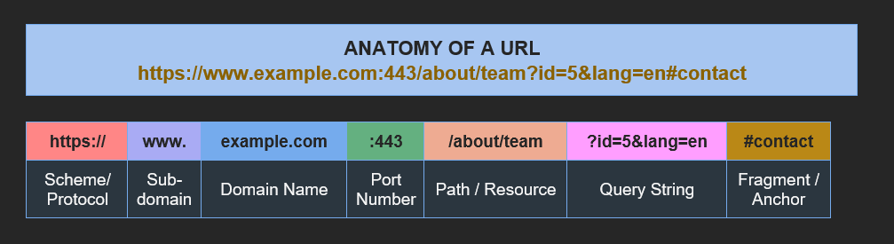

Uniform Resource Locator (URL)
A Uniform Resource Locator (URL) is the complete address used to locate a specific resource on the Internet. Every webpage, image, or file accessible via the Web has a unique URL. URLs follow a standardised syntax defined by RFC 3986.

Explanation of each URL part:
• Scheme (Protocol): Indicates the communication protocol (http, https, ftp, mailto).
• Subdomain: A prefix that identifies a specific section of a domain (www, mail, blog).
• Domain Name: The human-readable address registered for the website (example.com).
• Port: The network port used; often omitted when default (80 for HTTP, 443 for HTTPS).
• Path: Specifies the exact resource location within the server's directory structure.
• Query String: Key-value pairs that pass parameters to server-side scripts (after '?').
• Fragment: Points to a specific section within the returned page (after '#').